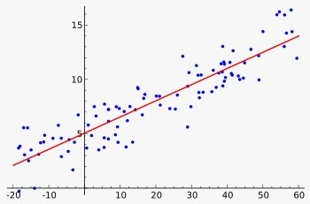
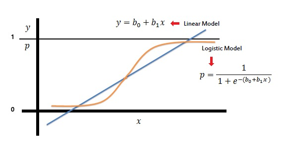
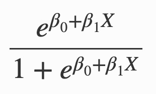
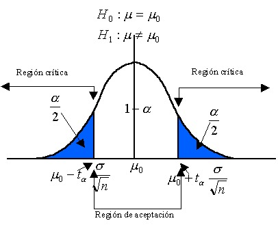

Sed ipsum dolor
Phasellus convallis elit id ullamcorper pulvinar. Duis aliquam turpis mauris, eu ultricies erat malesuada quis. Aliquam dapibus.
A finales del año 2019 nadie pensaba que un agente viral conocido como SARS-CoV2 originado en Wuhan, China, desencadenaría lo que actualmente se denota como la primer pandemia del siglo XXI.
La enfermedad ocasionada por este virus, conocida como covid-19, no ha presentado una tasa de mortalidad que supere el 8.5%. A pesar de esto, se ha observado que la probabilidad de mortalidad incrementa exponencialmente en los pacientes que presentan enfermedades crónico-degenerativas, volviéndose una población de alto riesgo.
Este estudio tendrá como objetivo hacer predicciones sobre qué comorbilidades potencian el riesgo de mortalidad en la población. Esto se logrará por medio del modelo estadístico de regresiones lineales logísticas.
Creative CommonsDe acuerdo a los datos públicos sobre defunciones ocasionadas por SARS-CoV-2, estableceremos modelos de regresión lineal logística con el propósito de determinar la relación de mortalidad por el padecimiento Covid-19 en presencia de otras enfermedades.
A continuación antecedentes.
Una regresión lineal es un modelo matemático usado para aproximar la relación de dependencia entre una variable X y otra variable Y en un conjunto de datos, por medio de una expresión que posea la forma de una línea recta denotada por la función : Y = 𝞫1X + 𝞫0
Para realizar los análisis estadísticos sobre la relación existente entre cada una de las comorbilidades se hará uso de lo que se conocen como modelos lineales generalizados los cuales son utilizados para los problemas de clasificación binaria. Estos modelos buscan explicar los resultados obtenidos en una variable binomial a partir de su relación con valores escalares observados en otras variables independientes por medio de un modelo logit (regresión logística).
La regresión logística toma el valor devuelto por una regresión lineal obtenida mediante el método de mínimos cuadrados y lo transforma en una expresión cuyo resultado siempre esté comprendido entre los valores 0 y 1, lo cual se logra por medio de la función:
Es una función encargada de devolver el mejor score de probabilidad que sirva como punto de corte para clasificar dos grupos de acuerdo a la categoría a la que deben pertenecer. Esto se logra por medio de análisis estadísticos de pruebas de hipótesis que permiten establecer una región de aceptación y rechazo.

Phasellus convallis elit id ullamcorper pulvinar. Duis aliquam turpis mauris, eu ultricies erat malesuada quis. Aliquam dapibus.

Phasellus convallis elit id ullamcorper pulvinar. Duis aliquam turpis mauris, eu ultricies erat malesuada quis. Aliquam dapibus.

Phasellus convallis elit id ullamcorper pulvinar. Duis aliquam turpis mauris, eu ultricies erat malesuada quis. Aliquam dapibus.